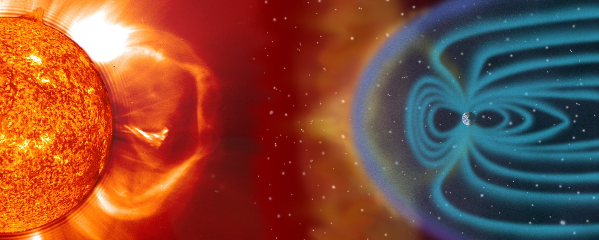

I love the Sun. It is the heart of our solar system. Its gravity impacts every object nearby, holding it all together, in its orbit. Sun and Earth are interconnected - this affects the ocean currents, weather, climate, auroras...however, it can also be very destructive.
This image captures a strong solar flare eruption. Solar flares are tremendous explosion of electromagnetic radiation on the Sun, caused by the sudden release of magnetic energy near or within sunspots (regions at Sun's surface that appear darker because they are cooler than the surrounding area, they are formed by the concentrations of magnetic fields that block hot gases from rising) In this image specificlly, an X-class flare can be seen bursting from the Sun. X-class flares are the most intense and major events that could trigger atmospheric and evironmental destruction. The planet would be exposed to extreme ultraviolet radiation and intense streams of high-energy charged particles.

Fortunately, our Earth has a strong magnetosphere and also an ozone layer that protects it from events like this. Although, we can still sometimes experience radio blackouts, geomagnetic storms or radiation exposure.
It feels unbelievable how small and incapable the Earth is compared to Sun. But Earth has something very unique the Sun never will - life That's what makes it special and extraordinary.

Cybergame 2026 has officially ended. I must say that I'm pretty satisfied with my result. Last year I ended up in the top 130. So this year's goal was to break into the top 100. In the end I ended up 54th, winning the Junior category. My goal was sucessfully reached. Nevertheless, there's always room for improvement.
My worst category was the offensive security AKA webs. I really suck at them, even when I knew where the vulnerability was, I struggled to craft a suitable exploit. So I hope that over the year I'll get better at them.
My favourite categories this year were cryptography (traditionally) and, surprisingly, malware analysis. Crypto has been my passion since the beginning of my path in cybersecurity. I get lost a lot in the beautiful math behind the code. It's the perfection of the universe - so precise and elegant. This year's tasks with elliptic curves were both brutal and intriguing. It took me some time to get around them but in the end I became obsessed. Eventually this began my whole project idea on which I'm currently working.
On the other hand, malware analysis was pretty funny. I discovered that I love the kind of malware which can damage the PC externally (not sure if that's a good thing, but let's just continue). My virtual machines have suffered considerably in the name of science - they didn't sign up for that xd. Anyway I plan to continue working with the malware I got and eventually start modifying it and testing it on other kinds of hardware (everything in a secure environment and solely for educational purposes). So I guess this is going to become my new hobby. I hope my parents won't kill me lol.

On the 1st of May, THEMCTF was supposed to take place. Things got interesting pretty quickly, even in the beginning, we could all feel that something wasn't right. The email authentication wasn't working properly, the server was occasionally unreponsive and even the admins weren't sure what was going on. The CTF was alive for about an hour and a half and then suddenly we were hit by a notice that somebody else has taken over the server because of a docker vulnerability. Unfortunately, this was a vuln in the CTFd platform itself so I assume that there were other CTFs affected by this as well. I hope the next one is going to run smoother. But at least I've got this one crossed off my bucket list, because this was certainly the shortest CTF I've ever participated in.
For those who are curious about the vulnerability, here's a quick explanation: Integer overflow could be performed in the sqlite3KeyInfoFromExprList function in SQLite versions 3.39.2 through 3.41.1. It allowed the attacker with the ability to execute arbitrary SQL statements to cause denial of service or disclose sensitive information from process memory via a crafted SELECT statement with a large number of expressions in the ORDER BY clause. This happened because the logic assumed the resulting value would always be larger than the original, but when the integer exceeded its maximum value, it got wrapped around to a very small or even negative number, that broke the assumption.

A year ago, a friend told me about this game that focused on cybersecurity. I had never heard about cybersec before, so in the beginning I didn't pay much attention to it. I remember doing my first tasks somewhere in the middle of the game - it was OSINT. The task was to track down a certain criminal that was travelling while we were searching for him. One would assume that this is just a common OSINT task, but it didn't feel that way at that time. We were both new to cybersec and I remember how desperately we were trying to find him. We were dedicated for hours every single day. AI wasn't as capable as it is today. If I uploaded those pictures to ChatGPT or Claude today I would probably get to the result in a few minutes. It is incredible to me how much did AI change over the course of a single year, not just concerning cybersecurity but everything else as well. It's slowly starting to play an irreplacable part in our daily lives and it'prone to grow. Now, don't get me wrong - I love robotic engineering (I've built several robots at home :D), synthetic algorithms behind AI that the humanity was able to create...it's just that sometimes I get doubts about our future. Will AI be integrated to the system so well, it's going to become crucial for our survival? In that case, are we going to become just some passive consumers dependent on it?
Maybe I'm philosophising more than I should, but it just a thought that crosses my mind...
PS: Tade, if you're reading this, I just wanted to say thanks for introducing me to cybersecurity and informatics in general. It really helped me to make some important life decisions
in progress
in progress
in progress